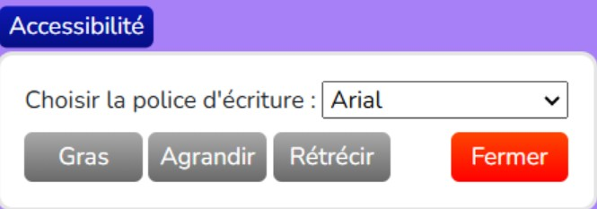

Stage de 2ème année
Description
Voici mon stage dans l'entreprise Poubeau, une belle occasion de découvrir le monde professionel dans mon domaine.
Détails :
- Localisation : Jaux (60), France
- Date : 6 janvier au 14 février 2025
- Languages utilisés : HTML & CSS, javascript, bladePHP, JSON
- Outils/logiciels utilisés : Visual studio code, framework Laravel, Laragon, HeidiSQL, Github
Missions
- Mission 1 :
- Mission 2
- Mission 3
Permettre au personnel du magasin de saint-maximin de demander du stock de produits aux autres magasins (Jaux et Beauvais) pour faciliter la gestion des commandes en ligne.
Cette fonctionnalité donne la possibilité au personnel d'ajuster la quantité démandée et d'envoyer la demande de stock automatiquement sur leur application de communication Microsoft Teams.
Ce système vise à optimiser la communication et l'approvisionnement entre les différents points de vente, assurant ainsi une meilleure gestion des ressources.
Permettre au personnel de se rendre sur une page "Demandes" répértoriant toutes les demandes en cours.
Contenant pour chaque demande sa date et son contenu donc, les produits ainsi que la quantité demandée et permettant aussi le téléchargement d'un fichier excel incluant ce qui est cité plutôt.
Réalisation d'un bouton d'accessibilité permettant pour les personnes concernées de modifier la police d'écriture, la taille de la page et de mettre en gras tout le texte de la page si la personne en a la nécessité.
Bénéfices du stages :
- Approfondir et appliquer mes compétences acquises dans ma section BTS
- Travailler sur un projet en équipe
- Nouveaux languages appris
- Nouvelles habitudes apprises
Exemple du bouton d'accessibilité :

 Rapport de stage
Rapport de stage